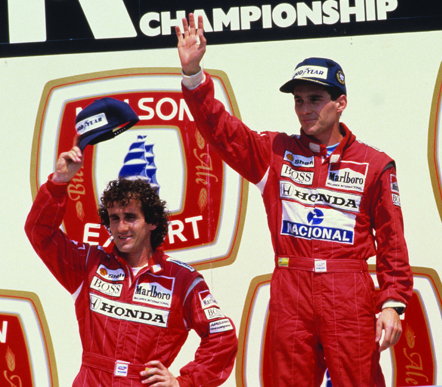

History of Formula 1
The FIA Formula One World Championship began in 1950 at Silverstone, UK. Over seven decades the sport grew from a European series into a global championship with advanced technology and strict safety standards.

Final Project · Berkay Gündoğdu · Formula 1
The FIA Formula One World Championship began in 1950 at Silverstone, UK. Over seven decades the sport grew from a European series into a global championship with advanced technology and strict safety standards.

Giuseppe Farina won the first title in 1950 driving for Alfa Romeo. Juan Manuel Fangio dominated the decade with five championships. Cars had front engines, narrow tyres, and almost no safety equipment by modern standards.
Turbocharged engines produced extreme power. Ayrton Senna and Alain Prost fought legendary battles at McLaren. Ground-effect aerodynamics made cars faster but more dangerous until rules changed.
Michael Schumacher won five consecutive titles with Ferrari (2000–2004). The era also saw improved TV coverage, more Asian races, and the rise of teams like Renault and McLaren as title contenders.
1.6-litre V6 turbo hybrid power units replaced V8 engines in 2014. Mercedes won eight consecutive constructors' titles. Lewis Hamilton matched Schumacher's seven championships.
Ground-effect cars returned in 2022. Max Verstappen and Red Bull dominated multiple seasons. A cost cap now limits team spending, and the 2026 rules will change power units again.